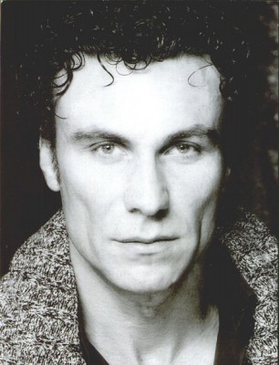
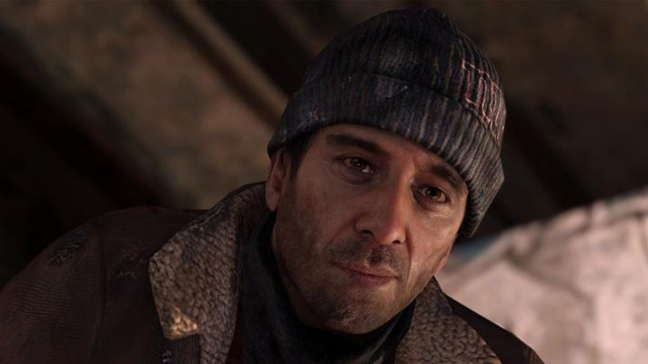

#7437 Double Team


 IMDB-Wertung: 4.7 / 10
IMDB-Wertung: 4.7 / 10  Tomatometer: 11
Tomatometer: 11  Metascore: 0
Metascore: 0 
Jack Quinn ist ein erfolgreicher Antiterror-Spezialist und CIA-Topagent. Doch nun hat er genug von seinem aufregenden Leben und will mit seiner Frau Katherine seinen Ruhestand an der französischen Riviera genießen... Doch daraus wird vorerst nichts, denn Terrorist Stavros kidnapped Katherine, um sich so an seinem alten „Lieblingsfeind“ zu rächen. Quinn bläst zum Angriff und macht sich mit Waffenhändler Yaz auf die Suche nach dem üblen Burschen.
Jahr: 1997
Dauer: 89 Minuten
FSK: 16
Land: USA Studio: Columbia PicturesTonspuren: DD2.0 - ,
Untertitel:
Auflösung: 1080p (1920x816) Größe: 6901 MB
Genre: Action, Thriller, Sci-Fi, Komödie
Regisseur:  Hark Tsui
Hark Tsui
Drehbuch: Don Jakoby
Soundtrack:
Darsteller:
 Jean-Claude Van Damme als Jack Quinn
Jean-Claude Van Damme als Jack Quinn- Dennis Rodman als Yaz
 Mickey Rourke als Stavros
Mickey Rourke als Stavros Paul Freeman als Goldsmythe
Paul Freeman als Goldsmythe- Natacha Lindinger als Kathryn Quinn
 Jay Benedict als Brandon
Jay Benedict als Brandon Bruno Bilotta als Kofi
Bruno Bilotta als Kofi-  Mario Opinato als James
- Asher Tzarfati als Moishe
 Malick Bowens als Delta Four
Malick Bowens als Delta Four- Patrick Cauderlier als Bravo Three
 Orso Maria Guerrini als Colony Resident
Orso Maria Guerrini als Colony Resident Hans Meyer als British Man
Hans Meyer als British Man- Paolo Paoloni als Old Monk
 Ted Rusoff als Brother Ramulu
Ted Rusoff als Brother Ramulu- Sigal Diamant als Glada
- Angelo Ragusa als Stavros' Goon
- Nick Brett als Hospital Guard
 Valéria Cavalli als Dr. Maria Trifioli
Valéria Cavalli als Dr. Maria Trifioli- Joëlle Devaux-Vullion als Stavros' Girlfriend
- Grant Russell als Carney
- William Dunn als Roger
- Rob Diem als Dieter Staal
- Ken Samuels als Stevenson
- Sandy Welch als Delta Two
- Jessica Forde als Delta Three
-  Dominic Gould als Delta Five
- Frederick Renard als Delta Six
- Cyrille Dufaut als Bravo One
- Eric Gauchy als Bravo Two
- Alexander Koumpan als Russian Man
- Jesse Joe Walsh als Jacseck
- Peter Nelson als American CIA Agent
- Paolo Calissano als Roman CIA Agent
- Pascal Lopez als Stavros' Man
- Dominique Fouassier als Stavros' Man
- Jean-Pierre Stewart als Yamir
- Umberto Raho als Brother Regulo
- Adam Kaci als Cyrus
 Xin Xin Xiong als Stavros' Man in Hotel
Xin Xin Xiong als Stavros' Man in Hotel- Pascaline Girardot als Domestic
- Nathalie Grac als Mermaid
- M. Benabiles als Pilot
- M. Szkolnic als Co-Pilot
- Gabriella D'Olive als Nurse
- Rob Kaman als Goon , uncredited
Datei: X:\1997\Double Team (1997, FSK16, 1920x816).mkv seit 10.11.2017
Festplatte: HD 1996-2002
 Es gibt insgesamt 83 Filme in der Gruppe '1997'
Es gibt insgesamt 83 Filme in der Gruppe '1997'